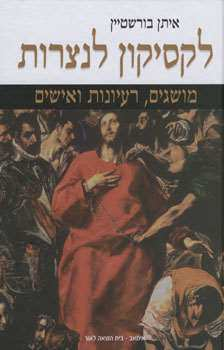

06/12/2012

La réputation de sérieux et de qualité de la revue Sens, de l'Amitié Judéo- Chrétienne de France, n'est plus à faire. Pourtant, je veux m'arrêter, dans cet article, sur le numéro 374, de décembre, qui clôture l'année 2012. Il est intitulé « Jésus, un Juif de son temps ». Je l'ai lu avec intérêt et empathie, comme c'est toujours le cas s'agissant d'une publication que j'apprécie au plus haut point, mais avec quelque chose en plus, que j'appellerai, sans qu'il faille voir quelque emphase dans cette expression: un sentiment d'excellence.
1
Et tout d'abord, excellent est l'éditorial de Paul Thibaud, qui ouvre ce numéro. La réputation de l'homme et du philosophe – qui fut, durant des années président de l'Amitié Judéo-Chrétienne de France, et qui en est aujourd'hui le Président d'honneur – est trop connue pour que je m'y attarde, mais je voudrais rendre hommage à la pertinence – et à la force! – de sa perception du dialogue interreligieux, en général, et judéo-chrétien, en particulier. Cet extrait de son texte en témoigne: […] le dialogue interreligieux, dont le dialogue judéo-chrétien est à bien des égards le prototype, trouve une signification plus centrale et cruciale qu'auparavant. A condition qu'on n'en reste pas aux affaires pratiques, à la promotion de la tolérance, à la diplomatie, mais que les uns et les autres explicitent le noyau de leurs croyances. […] Nous sortons d'un monde d'aires culturelles et religieuses où, en terre d'Islam comme en Chrétienté, les minoritaires, dont les Juifs, quand ils n'étaient pas expulsés, devaient se faire discrets et respecter la croyance dominante. Qu'il n'y ait plus de croyance dominante protégée, voilà la nouveauté à laquelle, de tous les côtés, certains ont de la peine à consentir et dont le dialogue interreligieux est l'apprentissage. Afin d'échapper à ce que Daniel Sibony a nommé « l'enflure identitaire » et trouver les moyens d'une pertinence spirituelle dans le monde nouveau où elles sont jetées, le dialogue est pour les religions plus qu'une tâche, une manière d'être nécessaire 1.
2
Non moins excellent est l'essai du Frère Immanouel Castel 2, qui introduit un article du professeur Ruth Karton Blum (traduit par lui de l'hébreu, et dont je parlerai plus loin). Intitulé « Un écho de l'Évangile en Israël » 3, cet article documente, en perspective cavalière 4, différentes perceptions de Jésus par le monde juif, depuis le Talmud jusqu'à des ouvrages contemporains, dont certains sont récents 5. Ce qui fait la force de l'article d'I. Castel, c'est qu'il ne se résume pas à une nomenclature, mais situe la démarche – intellectuelle, littéraire, voire spirituelle – de chacun des auteurs dont il a choisi de résumer les livres qu'il estime représentatifs de la curiosité, voire de la fascination juives pour le personnage de Jésus. Intéressante est la mention qu'il fait, au terme de son enquête, de ce propos de la très médiatique Dr Tamar Brosh, qui « dirige le groupe Katedra, Centre d'études pratiques du Musée de Tel Aviv, et annonçait une série d'entretiens sur Jésus et l'Évangile »: « Il y a trente ans […] un tel projet eût été impensable, mais nous devons reconnaître qu'il est devenu impossible de comprendre l'état actuel du monde si l'on fait abstraction du fait chrétien » 6.
Bref, un essai stimulant, qui fourmille de détails dont, personnellement, j'ignorais presque tout. Quiconque le lira en sortira enrichi.
3
Autre communication d'excellence: celle du professeur Ruth Karton Blum. Intitulée symboliquement « Le voile de Véronique », elle est assortie d'un sous- titre plus explicite: « Une vision renouvelée du Nouveau Testament dans la littérature israélienne » 7. L'auteur ouvre sa réflexion par une citation substantielle de l'ouvrage d'Amos Oz, Histoire d'amour et d'obscurité, Jérusalem, (éditions Keter, 2002), dans laquelle il évoque l'œuvre du savant israélien Joseph Klausner, qui consacra une grande partie de son œuvre à la personne de Jésus. Bref extrait: Un jour, l'oncle Yosef me fit la confidence suivante: « A l'école, on t'apprend certainement à détester la figure tragique de ce juif merveilleux, mais j'espère qu'on ne te recommande pas de cracher ostensiblement chaque fois que tu passes devant son image ou sa croix. Lorsque tu seras grand, efforce- toi, au risque de faire enrager tes éducateurs, de lire le Nouveau Testament, et tu pourras alors te rendre compte que cet homme, proche de nous par la chair et le sang, était en quelque sorte un Tsadiq, une Figure sublime. […] Revenus en ce lieu, dans une Jérusalem renouvelée, nous devons élever la voix pour dire à Jésus, fils de Joseph […]: "Toi notre frère, toi notre frère!" » Ce qui fait l'originalité de la démarche du professeur Blum, c'est qu'elle part d'un constat sociologique insuffisamment mis en lumière avant elle, sauf erreur, rappelant que « nous sommes arrivés à un stade post-polémique […] étant donné qu'un demi-siècle nous sépare de la rupture chrétienne-juive qui s'est manifestée dans la Shoa. » 8. Et l'universitaire de souligner: Nous vivons, de surcroît, dans l'État juif où l'écrivain israélien ne ressent plus l'attirance due à la « tentation chrétienne », du fait que le Nouveau Testament ne figurait pas au programme d'études des romanciers et des poètes. » 9. Écartant « l'explication simpliste » de l'attrait exercé par « un coup d'œil jeté […] sur une réalité étrangère, d'autant plus attirante qu'elle est prohibée », elle affirme: une telle interprétation pourrait justifier une séduction initiale, mais ne saurait en aucun cas rendre compte de la complexité du lien durable que nos poètes ont souvent ressenti avec le texte si évocateur du Nouveau Testament et plus spécialement avec la personne de Jésus qui en est l'âme 10. Intéressante est la distinction méthodologique qu'établit Blum entre « deux types d'approches: celle qui restait tributaire de la diaspora européenne, où le fait de vivre au sein d'une société à prédominance chrétienne tendait à influer sur une œuvre, même après la montée de son auteur en Israël. Puis celle d'écrivains qui, formés dans le pays [Israël], ont connu le christianisme […] à travers les livres. L'auteur ajoute une précision importante « au sujet des deux points de vue où l'on distingue le "regard de la collectivité" du "regard de l'individu". » Et d'énoncer: La collectivité tend à voir le Nouveau Testament dans la perspective d'une rivalité entre Judaïsme et Christianisme, du fait de la survivance d'anciens préjugés, même quand il s'agit de la figure évangélique de Jésus. Par contre, le regard porté par l'individu sur Jésus et les autres grandes figures du Nouveau Testament peut devenir personnel au point de répondre aux besoins émotionnels occasionnés par la lecture du texte évangélique 11. Puis elle passe en revue les auteurs des XIXe et XXe s. qui ont écrit avec empathie sur Jésus et/ou le christianisme, ou se sont référés au Nouveau Testament dans leurs œuvres; on est étonné de voir tant de noms d'auteurs, dont certains bien connus, tels, entre autres: Joseph Klausner, Pinhas Sadeh, Nathan Zach, Yona Wallach, Hanoch Lévine, Avner Treinin, Haïm Baer, Yoël Hoffman, Biyamin Shvili, Yoram Kaniouk, A.A. Kabak, Shalom Ash, Léa Goldberg, Amos Oz, Israël Eliraz, etc. J'ai beaucoup appris de la lecture de cet essai. Par exemple que, pour souligner « l'opposition du Judaïsme et du Christianisme », Ahad haAm (1856-1927) a écrit: Tant que notre peuple conservera son caractère propre, un Juif authentique ne pourra jamais ressentir de sympathie particulière pour l'enseignement évangélique dont l'horizon se limite à la poursuite d'un salut personnel 12. Et qu'un autre idéologue sioniste, Schlomo Schiller, dirigeant sioniste des années 1930, soutenait que Le sauveur, dans le christianisme, n'est pas le sauveur d'une collectivité, mais d'individus 13. Conclusion, sur ce point, du professeur Ruth Karton Blum: Dans la perspective sioniste, l'accent mis sur le salut de l'individu – en prônant « le salut personnel seulement » – représentait pour un lecteur hébreu un signe manifeste de l'infériorité du Christianisme par rapport au Judaïsme. Mais aujourd'hui, pour les témoins du renouveau national occasionné par la fondation de l'État, cet aspect est au contraire devenu un facteur propice à sa recherche de salut personnel, en dépit des remous éventuels que pourrait susciter une telle démarche. Ce tournant historique explique l'attirance que nos gens de lettres ressentent pour les textes évangéliques, et partant, pour les motifs d'inspiration qu'ils pourraient y trouver 14. Enfin, la conclusion générale de l'auteur mérite d'être citée dans son intégralité: La littérature israélienne fait à nouveau, du Nouveau Testament, une lecture élaborée qui se veut à la fois réflexive et novatrice. L'apport de la traduction du récit chrétien à la littérature hébraïque devient un cas de figure où la présence d'une "altérité" manifeste une ambivalence culturelle. Le regard porté sur l'étranger inspire à la fois des sentiments de suspicion et de fascination, en sorte que la "traduction" donne de franchir une frontière, à l'endroit où une culture donnée s'ouvre sur un monde différent. En tout état de cause, elle permet au moins de ménager éventuellement un espace favorable à une rencontre avec l'autre. La présence cachée parmi nous du Nouveau Testament nous enseigne que l'hybridité toujours possible au sein d'une même famille, le poids de l'inconscient et le besoin de contester sont des facteurs qui déterminent notre identité. Ainsi, une culture différente peut-elle éventuellement rappeler à celle qui l'accueille des données que celle-ci aurait tendance à oublier 15.
4
Le quatrième et dernier texte de cette livraison – particulièrement riche –, de la revue Sens, présentée et commentée ici, mérite, lui aussi, la mention d'excellence. Il ne faut surtout pas se laisser intimider par sa longueur et sa richesse textuelle, d'autant qu'il est rédigé dans un style simple et sans le moindre pédantisme. Intitulé « Jésus, Juif pratiquant » 16, il est dû au Père Philippe Loiseau, prêtre du diocèse d'Angers et président du Groupe d'Amitié Judéo-Chrétienne d'Angers. Cet ecclésiastique enseigne la Bible et le judaïsme à l'Université Catholique de l'Ouest, et anime des sessions visant à faire découvrir aux fidèles la richesse et l'apport considérables de la foi, de la tradition et de la liturgie juives à ses homologues chrétiennes. Comme l'indique le titre de son essai, l'auteur se propose de resituer Jésus dans la tradition, la foi et la pratique des juifs pieux de son temps. Pour ce faire, il parcourt les évangiles en commentant les passages où la judéité de Jésus est évidente et s'exprime sans équivoque, même si c'est dans des contextes polémiques. Le grand mérite de cette méthode que je qualifierais d'« immersion textuelle », est de mettre le lecteur en contact direct avec le texte évangélique et avec les événements qu'il narre. Le commentaire du P. Loiseau fourmille d'informations précieuses sur les pratiques et l'esprit du judaïsme du temps de Jésus. Sans érudition inutile, il précise les situations, les us et les coutumes et explique les termes. Il puise abondamment dans les textes rabbiniques par le truchement de bons auteurs francophones ou traduits en français, tant chrétiens ou judéo-chrétiens (Joseph Bonsirven, Kurt Hruby, Michel Remaud, Matthieu Collin, Pierre Lenhardt, Anne-Catherine Avril, Dominique de la Maisonneuve, Eliane Ketterer, Françoise-Anne Ménager, etc.), que juifs (Joseph Klausner, Grand Rabbin Michel Guggenheim, Marc-Alain Ouaknin, Rabbi Paysach J. Krohn, Rabbi Nossom Sherman, Shalom ben Chorin, David Flusser, etc.). Le paragraphe introductif de son article indique clairement son propos, c'est pourquoi je le cite ici intégralement: En janvier 1999, paraissait le premier numéro de la revue L'actualité des Religions (nouvelle formule) qui portait ce titre en couverture: Jésus était-il chrétien? Depuis ce temps, nous pouvons penser que la manière de poser la question a évolué et que le public est devenu davantage conscient que Jésus était juif. Mais il reste à approfondir ce que représente la judaïté de Jésus de manière plus précise: quelle fut sa pratique du Judaïsme dans le contexte de son temps? Il est bon de revenir sur cette question. Le point de vue défendu dans cet exposé est le suivant: une lecture attentive des Évangiles nous conduit à reconnaître, d'une part, que Jésus fut un Juif pratiquant proche du courant pharisien et, d'autre part, que c'est à partir de sa pratique juive qu'il a voulu inscrire sa prédication, sa mission et le dévoilement de son identité singulière 17. Cet essai s'inscrit dans la dynamique de la réconfortante découverte chrétienne de la spécificité et de la valeur intrinsèque de la foi juive, et en rupture radicale et définitive avec la théologie de la substitution et l'apologétique qui furent la règle durant tant de siècles d'un « enseignement du mépris » pour lequel le judaïsme n'était que l'ombre du christianisme, ou son faire-valoir. Nul doute qu'il contribuera à mettre les non-spécialistes chrétiens au contact des croyances, de la prière et de la pensée religieuse juives, dont ils ignorent le plus souvent la richesse et la fécondité et la contribution inattendue qu'elles constituent pour l'approfondissement de leur foi.
Pour clore cet essai, je tiens à exprimer au professeur Yves Chevalier, directeur de la revue Sens, mon appréciation et mon admiration non seulement pour cette remarquable livraison de décembre 2012, mais pour l'ensemble des contributions considérables qu'il y rassemble depuis de longues années, pour le plus grand bien de la connaissance du judaïsme et du christianisme, que le Seigneur englobe dans son dessein, sans confusion de nature ni abolition de leur identité respectives.
© Menahem Macina
1 Sens, n° 374, décembre 2012, p. 770 ↩
2 De cet auteur je ne sais rien, sauf qu'il a été l'un des fondateurs de l'Association Albert-Decourtray, et qu'il semble avoir une bonne connaissance de la littérature israélienne contemporaine, qu'il lit dans la langue originale. ↩
3 Sens, ibid., p. 771-786. ↩
4 Au sens de vue de haut permettant d'embrasser l'ensemble d'une perspective. ↩
5 Tel celui d'Israël Jacob Yuval, Two nations in your womb - Perceptions of Jews and Christians in Late Antiquity and the Middle Ages. Berkeley, University of California Press, 2006. Traduction française de l'hébreu par Nicolas Weill: « Deux nations en ton sein », Juifs et chrétiens au Moyen-Âge, Albin Michel, Bibliothèque histoire, 2012. Référence reprise verbatim de la note 2 de la Rédaction de Sens, p. 784. Le Fr. Castel évoque également la publication récente, « en hébreu, d'un Dictionnaire du Christianisme », par « Étan Burstein, membre du Comité directeur de la Bank Leumi », dont je précise ici la référence: Eytan Burstein,Lexikon lanatsrut, musagim, reayonot weishim, éditions Keter, Jerusalem, 2012, 660 pages, et dont j'ai reproduit la page de couverture en tête de cet article. ↩
6 Sens, ibid., p. 786. ↩
7 Cf. Ibid., p. 787-798. En note 1 de la page 787, l'éditeur de Sens précise à propos de cet article: « Paru en hébreu dans Le moment d'une naissance. Études sur la littérature hébraïque et yiddish, en l'honneur de Dan Miron. Institut Bialik, Jérusalem, 2007 [traduit par Immanouel Castel]. » Voici la référence originale: Hanan Haver, Rega shel huledet: mehqarim besafrut ivrit uvesafrut yiddish likvod Dan Miron, éditions Mosad Bialik, Jerusalem, 2007. ↩
8 Id., ibid., p. 788-789. ↩
9 Id., ibid., p. 789. ↩
10 Id., ibid., p. 790. ↩
11 Id., ibid. ↩
12 Id., ibid., p. 797. ↩
13 Id., ibid. ↩
14 Id., ibid. Les italiques sont miens. ↩
15 Id., p. 798. Les italiques sont miens. ↩
16 Id., p. 799-828. ↩
17 Id., p. 799. ↩